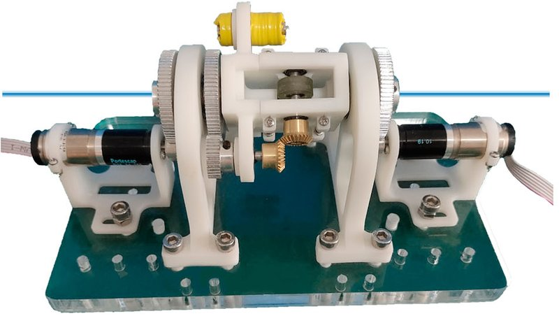

Academic bedside robots · dmci_peng2023
DMCI
DMCI: ergonomic dual-use mechanism (master interface or compact slave with unlimited travel) for cardiovascular intervention

1 / 4


- Family
- Academic bedside robots (academic)
- Devices
- interventional tool (guidewire/catheter)
- Degrees of freedom
- translation + rotation, motion decoupling and coupling kinematics
- Push
- Not reported
- Twist
- Not reported
- Tested up to
- Phantom
- Sim-to-real
- None found — No simulation-trained controller found for this robot.
Testing
- Highest level
- Phantom
- What was tested
- Kinematic verification and master-slave teleoperation tests; operator study vs joystick (sizes N.R.)
- Key numbers
- Kinematic mean errors < 1 deg and < 1 mm; master-slave errors 0.821 +/- 0.753 deg and 0.608 +/- 0.512 mm
Mechanism
- Push (translation)
- N.R.
- Twist (rotation)
- N.R.
- Device range
- N.R.
- Target anatomy
- cardiovascular intervention (bench)
Sensing and interface
- Force sensing
- N.R.
- Leader and haptics
- DMCI doubles as the ergonomic leader interface; compared against a joystick
- Imaging
- N.R.
- Sterility
- N.R.
Size
- Footprint (mm)
- N.R.
- Mass (kg)
- N.R.
Simulation
- Simulation model
- none found
- Sim-trained controller
- none found
Versions
- Lineage
- peng2023_design (IJCARS 2023)
Sources
- Design, development and evaluation of an ergonomically designed dual-use mechanism for robot-assisted cardiovascular intervention · International Journal of Computer Assisted Radiology and Surgery, 2022 · doi:10.1007/s11548-022-02755-4 [peng2023_design]
Notes
- Notes
- Group must be identified from the PDF. | 2026-10-13 coordinator: highest_validation bench -> phantom from the full text (W4_notes.md)
This record
- Read level
- abstract — abstract (Europe PMC)
- Picture
- peng2023_design Fig. 2(a) (prototype adopting DMCI), IJCARS 2023, doi:10.1007/s11548-022-02755-4 ↗ — licence: publisher copyright; grade A
- Picture changes
- native extract (2032x1154 figure); cropped to panel (a); panel letter on the white background whitened; not upscaled
- Found by
- academic: Search of academic bedside robots.
- Data
- JSON · YAML:
records/robots/dmci_peng2023.yaml - Correction
- Suggest a correction [repository not created yet]